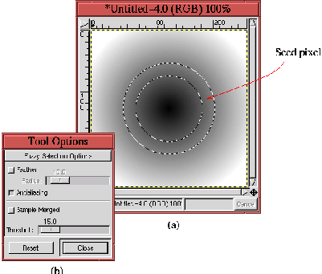

Next: 8.1.1.4
Кривые Безье Up: 8.1.1
Шесть инструментов группы Previous: 8.1.1.2
Лассо (Выделение произвольной
Next: 8.1.1.4
Кривые Безье Up: 8.1.1
Шесть инструментов группы Previous: 8.1.1.2
Лассо (Выделение произвольной
8.1.1.3 Волшебная палочка (Выделение
связанной области)
Figure: ``Волшебная палочка'' -
выделение области и корневой пиксел
 |
Хотя официально этот инструмент называется ``Выделение связанной
области'', название ``Волшебная палочка'' мне кажется
предпочтительным в этой книге, хотя бы потому, что иконка на кнопке в панели
инструментов похожа на волшебную палочку. Волшебной палочкой выполняется
выделение, основанное на указании корневого пиксела в изображении. Корневой
пиксел (seed pixel) - это первый выбранный пиксел, и пикселы, соседствующие с
корневым пикселом, включаются в область выделения, если их цвета достаточно
близки по цвету с корневым. Это создает вторичное множество выбранных пикселов.
Этот процес повторяется с пикселами, соседствующими с пикселами вторичного
множества, и так до тех пор, пока пикселы перестанут добавляться.
На рисунке 8.5
показано, работает Волшебная палочка.
На рисунке 8.5
(а) показан радиальный градиент, изменяющийся от черного в центре к белому на
краях. Место, где был выбран корневой пиксел, показано красной стрелкой.
Кольцевая область выделения, образованная с помощью Волшебной палочки,
показана "муравьиной дорожкой". Кольцевая область выделения имеет одинаковую
ширину по обе стороны от корневого пиксела потому, что Волшебная палочка
включает в область выделения пикселы, которые имеют значения цвета как больше,
так и меньше занчения цвета корневого пиксела.
Так сколько же пикселов, соседствующих корневому по цвету будут включены в
область выедления? Это определяется с помощью порога (threshold) Волшебной
палочки, который, как показано на рисунке 8.5
(b), может быть установлен с помощью ползунка в диалоге ``Параметры
инструмента'' (см. раздел 8.1.2).
Порог также может быть установлен интерактивно, с помощью мыши. Интерактивная
установка порога выполняется удерживанием левой кнопки мыши в нажатом состоянии,
когда Вы выбираете корневой пиксел. Когда появляется, контур области выделения,
продолжайте удерживать левую кнопку мыши и перемещайте мышь вправо (или вниз),
чтобы увеличить порог, и влево (или вверх) чтобы уменьшить его. Увеличение
порога приводит к увеличению области выделения, а уменьшение порога - к
уменьшению ее. Изменение порога с помощью мыши должно выполняться малыми
движениями, так чтобы измнения в области выделения могли быть полностью
контролируемы.
Волшебная палочка, в общем-то, удобный инструмент. Она автоматически
выделяет область, группируя пикселы,сходные по цвету и пространственно
связанные, начиная с корневого пиксела. Однако на практике довольно трудно
получить хорошие результаты используя Волшебную палочку. Из-за того, что
трудно подобрать нужные занчения для корневого пиксела и порога, которые
создадут желаемую выделенную область. В качестве примера представьте область,
которую Вы хотите выделить, используя Волшебную палочку, и которая имеет
пикселы со значениями цветов в диапазоне от X до Y. Чтобы выделить такую область
с помощью Волшебной палочки, корневой пиксел должен быть выбран точно
посредине между X и Y. Но каким образом мы определим, что X и Y это и есть
желаемая область выделения, и как мы найдем тот самый пиксел, который будет
иметь среднее значение цвета? Вот конкретные проблемы, и их не просто решить!
К счастью, в GIMP есть другой инструмент, позволяющий с большей легкостью
использовать концепцию цветового группирования. Этот инструмент называется Порог
и расположен в меню окна изображения Изображение->Цвета->Порог. То,
как его можно использовать, объясняется в разделе 9.5.3.
Next: 8.1.1.4
Кривые Безье Up: 8.1.1
Шесть инструментов группы Previous: 8.1.1.2
Лассо (Выделение произвольной
Grigory Bakunov 2003-05-26